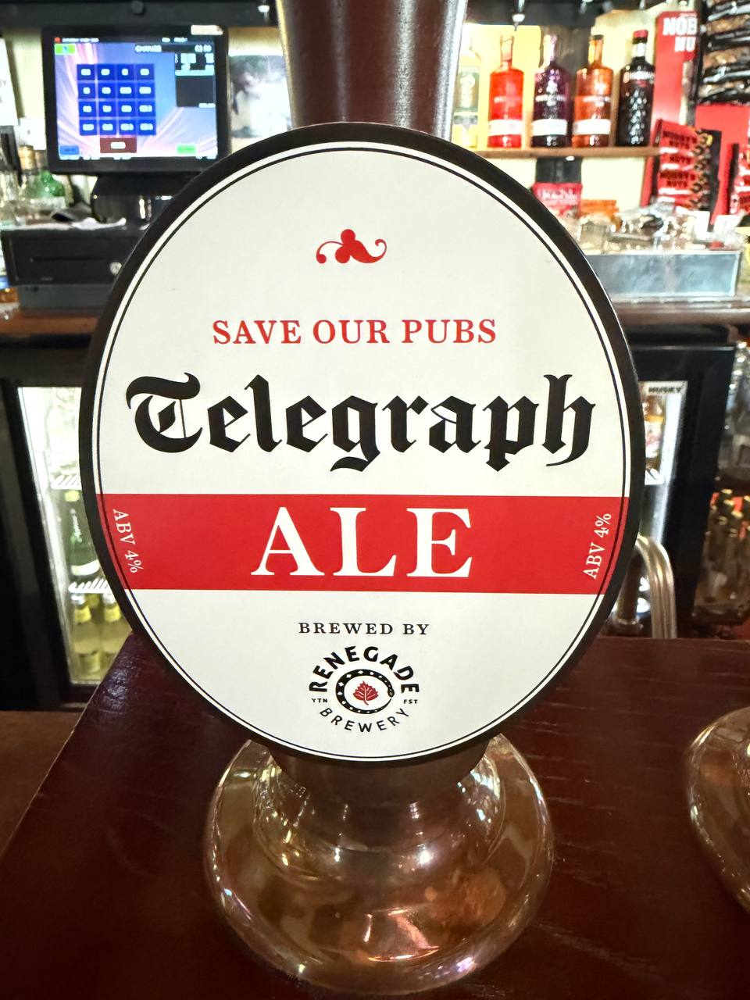

Four pubs a day are closing. The Telegraph's answer is a free pint.
Saturday 16 May is the Telegraph's National Pub Day. Renegade Brewery — the West Berkshire-based outfit that took on the West Berkshire estate after the original company collapsed in 2023 — has brewed a one-off 4% English bitter for the occasion. Telegraph Ale. Cask, classic, nearly 300 pubs pouring it, one Saturday.
The framing is the framing the campaign needs: UK pubs are closing at a rate of two to four a day, depending on which Telegraph piece you read — the launch coverage led with four, today's follow-up leads with two, and either figure ends a community asset that, by definition, can't easily be rebuilt. That's the number the paper led with when it launched Save Our Pubs in March, inviting readers to nominate their favourite local in 250 words. Five winners, picked by a Telegraph judging panel, each took home a £5,000 drinks tab for their pub. The other 290-odd pubs on the list pour Telegraph Ale for free, while stocks last, on the back of a single voucher emailed to readers.
Cross-party backing
The most striking thing about today's Save Our Pubs coverage isn't the beer. It's the line-up of political backers. Nigel Farage and Zack Polanski — Reform UK and Green Party leaders, polar opposites on almost every other axis of British politics — have both publicly backed National Pub Day. So have Sir Ed Davey for the Liberal Democrats and Kemi Badenoch for the Conservative opposition. Boris Johnson called pub closures "not just an economic disaster [but] a cultural and spiritual desecration". Polanski, a non-drinker, said pubs are "on its knees".
That's a coalition you almost never see in 2026. The shared messaging — that the pub is community infrastructure, not just a business — is doing more work than the free pint will. Backers also include chef Tom Kerridge, model Jodie Kidd, and Tim Martin of JD Wetherspoon, who calls pubs "the heartbeat of the nation". Hiroshi Suzuki, Japan's ambassador to the UK and an internet-cult-favourite of British real-ale drinkers, put it cleanest: "Nothing is more uniquely and wonderfully British than the local pub. Let's support local pubs — they are national treasures."
The policy context the campaign points at is real: Chancellor Rachel Reeves is ending business-rates relief for hospitality, alongside National Insurance rises, alcohol duty rises and a rising minimum wage. The Government is also planning to halve the drink-driving limit despite scant evidence of need. Pubs aren't closing because consumers stopped showing up; they're closing because the unit economics of the building, the licence and the rates bill are finally giving way. A free pint doesn't bend that curve. The publicity around the free pint might.
What's in the glass
Telegraph Ale is a 4% ABV cask English bitter brewed by Renegade specifically for the day. The pumpclip carries the Save Our Pubs livery — a Telegraph wordmark in cream and red sat on the standard bitter oval. Classic session strength, classic pumphouse style: malt-led, bitter-finished, designed to drink across an afternoon rather than headline a beer-festival flight. That's the right brief for a campaign about reviving the everyday local. The beer is also listed on Untappd, where Renegade has it logged as a Bitter — Best, ABV 4%.
Renegade is the right brewery for it too. When West Berkshire Brewery collapsed in 2023, its estate was acquired and rebooted under the Renegade name. The brewery has spent two years rebuilding the cask programme that made the original an East-of-Reading staple — so a bespoke cask order for a national one-day event sits cleanly inside what they're already good at.

— William Sitwell, Telegraph restaurant critic and judging-panel member
The five winning pubs
Each of the five Save Our Pubs competition winners received a £5,000 drinks tab to share with their regulars on Saturday, in addition to pouring Telegraph Ale.
Save Our Pubs 2026 winners
- The White Horse Inn — Stourpaine, Dorset
- Five Bells — Rattlesden, Bury St Edmunds, Suffolk
- The Three Kings — Hanley Castle, Worcestershire
- Brown and Blacks — Scone, Perthshire
- The Blacksmiths Arms — Lastingham, North Yorkshire
How to claim
The voucher arrives in Telegraph subscribers' inboxes and can be redeemed on Saturday 16 May, while stocks last, at any of the ~300 participating pubs on the Telegraph's interactive map. The condensed version: one pint per reader, 18+, no cash alternative, no substitutions, and the landlord's call is final once a venue's allocation runs dry.
London & Essex on the list
Three Essex venues are confirmed pouring Telegraph Ale on the day: The Bell at 55 High Street, Ingatestone (CM4 0AT) — the village pub two-thirds of the way down the A12 from Chelmsford to Brentwood — plus The Trading Room at 522 London Road, Westcliff-on-Sea (SS0 9HS), and The Victoria Tavern at 165 Smarts Lane, Loughton (IG10 4BP). The Bell makes geographic sense as the campaign's Mid-Essex anchor.
For London readers the participating list spans the city. From a quick search of the Telegraph table: The Hare on Cambridge Heath Road, Bethnal Green (E2 9BU); The Harp on Chandos Place, Covent Garden (WC2N 4HS); Nightingale on the Green in Wanstead (E11 2EY); Prince of Wales on Hampton Road, Twickenham (TW2 5QR); Skinners Arms on Judd Street, King's Cross (WC1H 9NT); Swan on Acton Lane, Chiswick (W4 5HH); and The Woodman on Archway Road, Highgate (N6 5UA). The full searchable list and UK map sit on the Telegraph's National Pub Day page for anyone scoping their own walking radius.
National Pub Day · The detail card
- Date
- Saturday 16 May 2026, while stocks last
- Beer
- Telegraph Ale — 4% ABV cask English bitter
- Brewer
- Renegade Brewery (West Berkshire)
- Participating
- Nearly 300 pubs across the UK
- Eligibility
- Telegraph readers, 18+, voucher via email
- Campaign
- Save Our Pubs
What PINtPOINT adds
The Telegraph's map tells you which pub is pouring Telegraph Ale. It doesn't tell you whether the rest of the tap list is worth staying for. That's PINtPOINT's job. Once your voucher is spent, the second pint is your call — and that's where knowing what else is pouring before you walk in starts to matter. Filter by style on the radar, see what's fresh at the next pub down the road, plan a small crawl that takes you from the free Renegade pint to a Cumberland sausage roll and a sharper second beer somewhere closer to home.
The structural problem behind National Pub Day doesn't get solved by a single Saturday's free round. Two-to-four closures a day is a relief-cuts and red-tape problem, not a marketing problem. But every reader who walks into a participating pub this Saturday is also a reader who's reminded what their local actually does for them — and that's where the cultural defence of British pubs starts. A pint is the smallest possible unit of solidarity. Whatever you think of the Telegraph's editorial line or the cross-party photo opportunity, the line of pumphandles in pubs like the Bell is the part that matters.
Follow-up note: the Bell at Ingatestone, where we claimed our Telegraph Ale on Saturday, is itself flagged Struggling on PINtPOINT's Financial Pressure Index — rates +74% vs 2023. Save Our Pubs, in one pub →
A free pint won't save 1,500 pubs a year.
But it gets you back through the door.
Frequently asked questions
What is National Pub Day 2026?
National Pub Day is a one-day campaign run by The Telegraph on Saturday 16 May 2026 as part of its Save Our Pubs initiative. Renegade Brewery has brewed Telegraph Ale — a 4% classic English bitter — for cask delivery to nearly 300 participating pubs. Telegraph readers can claim a free pint at any participating venue, while stocks last.
Who brews Telegraph Ale?
Renegade Brewery — the West Berkshire-based brewery that took on the West Berkshire Brewery estate after its 2023 collapse and rebranded. Telegraph Ale is a 4% ABV cask English bitter brewed specifically as a limited-edition release for 16 May 2026.
How do I claim a free pint?
Telegraph readers receive a voucher by email which is redeemable on Saturday 16 May 2026 at any of the ~300 participating pubs, while stocks last. One pint per person, 18+ only, no cash alternative, no substitutions. The landlord retains discretion once the venue's allocation runs out.
Which pubs are participating?
Over 250 pubs are pouring Telegraph Ale on 16 May. The Telegraph maintains a searchable table and an interactive UK map on its Save Our Pubs page. The five competition winners — The White Horse Inn (Stourpaine), Five Bells (Rattlesden), The Three Kings (Hanley Castle), Brown and Blacks (Scone) and The Blacksmiths Arms (Lastingham) — also have £5,000 drinks tabs to share with their regulars on the day.
What is Save Our Pubs?
Save Our Pubs is the Telegraph's editorial campaign launched in March 2026, responding to the loss of British pubs at roughly four a day. Telegraph readers submitted 250-word nominations for their favourite local; five winners were selected for £5,000 drinks tabs and the broader ~300 pub list pours Telegraph Ale on 16 May.
How does PINtPOINT help on National Pub Day?
PINtPOINT shows live tap lists for 1,091+ venues globally. Useful for your second pint: once the Renegade cask has run dry at your chosen pub, or you want a different beer style after the bitter, PINtPOINT can show you what else is pouring at the same venue or at the next pub down the road — filtered by what you actually want to drink.
Find your nearest participating pub, then check what's on tap there with PINtPOINT.
Download PINtPOINT